00开考先数格子：八段给三，三个给定段隔一格一个 —— 本篇的主刀是「称呼链 ＋ 时间轴」
Directions 里那句 reorganize these paragraphs into a coherent text ＋ Paragraphs A, E, and H have been correctly placed ⟹ 排序题（R32）。数格子：八段 − 三个给定 ＝ 五段，正好填满 41–45 ⟹ 零多余项（R107），七篇排序题里第六次零多余。零多余的好处是能自查：五个字母填完，八段必须一段不剩、连成一条线；有一处接不上，就是哪儿排错了。
① 认形态：七篇排序题，2023 是给定段最多的一年
| 年份 | 链条（绿＝给定） | 段数 | 给定 | 多余 |
|---|---|---|---|---|
| 2010 | 41 → 42 → 43 → 44 → E → 45 | 7 | 1 | C 多余 |
| 2011 | G → 41 → 42 → E → 43 → 44 → 45 | 7 | 2 | 零多余 |
| 2014 | 41 → A → 42 → E → 43 → 44 → 45 | 7 | 2 | 零多余 |
| 2017 | D → 41 → 42 → 43 → 44 → B → 45 | 7 | 2 | 零多余 |
| 2018 | 41 → C → 42 → 43 → F → 44 → 45 | 7 | 2 | 零多余 |
| 2019 | 41 → 42 → F → 43 → 44 → C → 45 | 7 | 2 | 零多余 |
| 2023 | 41 → A → 42 → E → 43 → H → 44 → 45 | 8 | 3 | 零多余（第六次） |
⟹ 2023 的链条就是 2014 的骨架在 43 和 44 之间插进一个给定段 H——连给定段的字母（A 在第 2、E 在第 4）都一样。给定段多一个，难度反而降了：41、42、43 三格都贴着给定段（41 只有下家 A，42 夹在 A、E 之间，43 夹在 E、H 之间），只有 44、45 两格连在 H 后面、要自己排先后。（顺带：41B 42F 43D 与 2010 的前三个字母一模一样——字母是巧合，别背。）
② 认文体：讲一段历史的新闻特稿，骨架是「引子 → 考察前 → 考察中 → 考察后 → 立法」
八段里有六段带硬时间：Two centuries ago（B）· Last year marked the 150th anniversary（A）· June 8, 1871（E）· Throughout the trip（D）· Weeks after completing the expedition（H）· in early 1872／That March（G）。只有 C、F 两段没写时间，但它们各有一个人名钩：F 第一次给出画家的全名 Painter Thomas Moran，C 只说 Moran’s paintings ⟹ C 在 F 后；F 又只叫 Hayden’s expedition，全名在 A ⟹ F 在 A 后。这和 2018（建筑史，R248 先分层再排序）、2017（人物传记，R231 称呼由全到简）是一个家族：叙事文排序，时间管大方向，称呼管相邻两段。
③ 做题顺序：41 → 42 → 43 → 44/45 一起
| 步 | 动作 | 本篇怎么走 |
|---|---|---|
| 1 | 五段头尾各扫一眼 | B 头 Two centuries ago（零回指）· C 头 Hayden sensed（只有姓）· D 头 Throughout the trip（the 回指）· F 头 the area’s riches（the 回指）· G 头 The bill（the 回指）⟹ 01 节表 |
| 2 | 41 用首段排除法 | 五段里四段开口就欠上文（D、F、G 带 the，C 只有姓），只剩 B（R79）；B 末 vivid photographs 是全文题眼 |
| 3 | 42 夹在 A、E 之间 | A 末列了四种科学家 → 要找「还有谁」：F ③ In addition to the entourage of scientists, the team also included artists；E 头 The journey officially began 是出发 ⟹ 42 必须是「出发前」的段 ⟹ F |
| 4 | 43 夹在 E、H 之间 | E 讲完整趟行程 → 要找「途中」；H 头 these images 要上家刚说过照片 ⟹ D（Throughout the trip ＋ 末句 these vivid photographs） |
| 5 | 44、45 排先后 | 剩 C、G。C 印照片、发给每位议员；G 法案通过、总统签字 ⟹ 先游说、后立法：44 C、45 G |
| 6 | 通读验闭合 | B A F E D H C G：保护自然在当年是新鲜事、转折点是照片 → 150 年前那次考察 → 为什么考察、带了谁 → 走了哪条路 → 途中怎么拍 → 照片成了证据、写成报告 → 印给议员 → 法案通过 ⟹ 首段那句「转折点是照片」在末段 played a key role 收回 |
01八段 A–H · 先给每一段标出「头路标 / 尾预示」
📄 八段原文由你的浏览器从原卷第 11–12 页识别成文字（选中任意单词弹「查有道」）｜ 🔑 一行 ＝ 这一段的两个接口 ｜ 紫色标签 ＝ 它最终落在哪一环（作答后对应项会自动置灰）｜ 本篇没有红框——八段全部有位置；绿色字母的 A、E、H 是题目给定的
02链条作答 · 点字母
每格下方点 A–H 作答，答后格子会就地补全成整段原文，并出线索链解析 ＋ 错因标签。「意」＝ 按句意转述，非逐字翻译。建议顺序 41 → 42 → 43 → 44 → 45（三个给定段把前三格各夹住一边或两边，最后两格只排 C、G 先后）。
↑ 上文：无（全文开头） ↓ 下文：A（已给定）——去年是杰克逊黄石系列照片 150 周年；介绍 19 世纪末那次考察与海登
(41) ＿＿＿＿＿＿＿＿＿＿＿＿＿＿＿＿
✂️ 为什么不是 F：F 的 Though 让步句（原住民早就知道这里富饶、多数美国人不知道）也像开头，但 the area’s riches 的 the area 是哪儿？F 第一句就说 the area，「黄石」要到第二句才出现——先用 the 再给地名，说明这片地方上文已经交代过（A ② the Yellowstone Basin）。
↑ 上文：A（已给定）——150 周年；海登带队考察；团队里有气象、动物、矿物学家和农业统计员 ↓ 下文：E（已给定）——旅程 1871 年 6 月 8 日在犹他州奥格登正式出发
(42) ＿＿＿＿＿＿＿＿＿＿＿＿＿＿＿＿
✂️ 为什么不是 C：C 讲的是考察拍回来的东西怎么用（capitalize on the expedition’s stunning visuals）——考察结束后的事，放在出发前时间倒流。
↑ 上文：E（已给定）——近四个月骑马进蒙大拿、沿黄石河绕黄石湖；那年秋天在怀俄明的布里杰堡结束 ↓ 下文：H（已给定）——「也许最重要的是，这些照片提供了文献证据」
(43) ＿＿＿＿＿＿＿＿＿＿＿＿＿＿＿＿
↑ 上文：H（已给定）——照片成了文献证据；考察结束几周后，海登把观察结果汇成一份长篇报告，想说服参众两院议员与内政部同僚：黄石应当保护 ↓ 下文：45
(44) ＿＿＿＿＿＿＿＿＿＿＿＿＿＿＿＿
↑ 上文：44（＝C）——海登把照片印给每位议员；历史学家说照片让人们意识到必须保护 ↓ 下文：无（全文结尾）
(45) ＿＿＿＿＿＿＿＿＿＿＿＿＿＿＿＿
02+七个接缝：五处硬、两处中——每一处都说得出「凭哪个词」
硬 ＝ 换一段就接不上（回指词、全名→姓、名单续报）；中 ＝ 换一段读着别扭但语法上不报错（时间顺序、话题推进）。零多余的排序题，七个接缝都得说出理由才算做完。
| 接缝 | 上段末（尾钩） | 下段首（头钩） | 强度 | 缝法 |
|---|---|---|---|---|
| B → A | came in the form of vivid photographs | a series of Yellowstone photographs by … 全名 | 中 | 泛指 → 具体：「照片」落到「哪组照片、谁拍的」 |
| A → F | The team included a meteorologist, a zoologist… | ③ In addition to the entourage of scientists ＋ also | 硬 | 名单续报：先报科学家，再报艺术家；also 要求上家报过一批人 |
| A → F | ② 全名 Ferdinand V. Hayden | ② Hayden’s expedition | 硬 | 全名 → 姓（R231） |
| F → E | 考察的动机、人员（出发前） | The journey officially began | 中 | 准备 → 出发：officially began 要上文是「还没出发」 |
| E → D | they concluded the survey（整趟行程） | Throughout the trip | 硬 | the trip ← the journey 同义回指；概述行程 → 细述途中 |
| D → H | these vivid photographs were another thing entirely | Perhaps most importantly, these images | 硬 | these ← these、photographs → images；「好看」→「最重要的是有用」（比较级要基准，R271） |
| H → C | convincing senators and representatives | to each member of Congress（C ②） | 硬 | 总 → 分：H 说照片到了官员手里，C 说怎么到的；对象收窄到「每一位议员」 |
| C → G | something that has to be protected | sailed through Congress · legislation protecting | 中 | 游说 → 立法：Congress 原词接力，protected → protecting 从「应当」到「做到」 |
⟹ 八段七缝，列出来是八行（A → F 有两条钩，名单与称呼各一条）。三处「中」缝都在时间轴上：B → A 是「现在说回过去」，F → E 是「准备到出发」，C → G 是「游说到立法」——单看词面不硬，但时间不能倒着走。叙事文的排序题就是这样：硬钩定相邻两段，时间轴把相邻的小块串成一条。
02++两条暗线：称呼链 · 时间轴（排完序拿来验收）
① 称呼链：三个人，全名各出现一次，此后只用姓
| 人物 | 全名首现 | 之后的称呼 |
|---|---|---|
| 摄影师杰克逊 | A ① photographer William Henry Jackson | A ② Jackson · F ③ photographer Jackson · D ① Jackson · C ② Jackson · G ④ Jackson’s photos |
| 考察队长海登 | A ② Ferdinand V. Hayden（＋ 地质与地理调查局局长） | F ② Hayden’s expedition · H ② Hayden · C ① An effective Washington operator, Hayden |
| 画家莫兰 | F ③ Painter Thomas Moran | C ② Moran’s paintings —— 全文只有这一处姓，它把 C 钉在 F 之后 |
| 两位受访者 | C ③ Alicia Murphy（公园历史学家）· G ⑤ Heather Hansen（记者、作者） | 各只出现一次，身份当场交代 ⟹ 不提供排序信息 |
⟹ 拿这张表验收：B 零人名（首段）→ A 两个全名 → 之后只有 F 再给一个全名 → C 用到 F 的人。称呼链在这篇里能直接排除 C 去 41、C 去 42、F 去 41 三种错排（⟹ R231，2017 狄更斯小传那篇也是这把刀）。
② 时间轴：八段里六段带时间，两段靠人名
| 顺序 | 段 | 时间标记 | 这一段在时间轴上的位置 |
|---|---|---|---|
| 1 | B | Two centuries ago | 大背景：保护自然还是新想法 |
| 2 | A | Last year marked the 150th anniversary · a late 19th-century expedition | 从「去年」回望 150 年前的考察（借今说古） |
| 3 | F | （无 · 讲动机与人员） | 出发前 |
| 4 | E | June 8, 1871 · Over nearly four months · That fall | 出发 → 行进 → 结束 |
| 5 | D | Throughout the trip | 途中（镜头拉回 E 那四个月里） |
| 6 | H | Weeks after completing the expedition | 结束后几周：写报告 |
| 7 | C | （无 · 讲印照片、发议员） | 游说 |
| 8 | G | in early 1872 · That March | 立法、签字 |
⟹ 和 2018 那篇（艾森豪威尔行政办公楼，R248）不同，这篇没有「总述层」包住「叙事层」：只有首段 B 是总论，其余七段一路按时间往下走。所以首段一定、其余顺着时间排——这是七篇排序题里时间线最干净的一篇。唯一要小心的是 D：它的时间是「途中」，比 E 的「结束」早，却排在 E 后面——D 不是「下一件事」，是把 E 那四个月放大来看，排序看的是叙述顺序，不是事件发生的先后。
03🔍 与黄皮书交叉核对：答案零书误，补两条硬钩、商榷一处
| 题 | 黄皮书主证据 | 本页补充 / 商榷 |
|---|---|---|
| 41 B | F、D、G 段首有回指；C 首人物非全名；B 对比式开篇、末句概括 | 同。补：B 末 vivid photographs 与 G ④ played a key role 首尾成圈 |
| 42 F | the area ← A ② Yellowstone Basin；the team included → the team also included 递进 | 同。补一：F ② Hayden’s expedition 只有姓，全名在 A ⟹ F 必在 A 后（书未用） |
| 43 D | Throughout the trip ← E 整趟行程；these images ← D 末 vivid photographs；排 C：与 H 同属实用价值、体现不出 most importantly | 同 |
| 44 C | H 总、C 分（照片怎样到了官员手里）；排 G：C 应在 G 前 | 同。补二：C ② Moran’s paintings 只有姓，全名在 F ⟹ C 必在 F 后（书未用；它让 C 连 41、42 两个位置都去不了） |
| 45 G | 末段常讲影响或意义；与首段「照片是转折点」呼应 | 商榷：书在 G 的「路标推引」里说 The bill「提示上文可能提及议案相关内容」——考卷八段里没有任何一处提到议案，这条路标指向的东西不存在；G 的定位只能靠时间（1872）和 Congress 接力 |
📎 背景（WebSearch 核）：原刊发表于 2021 年 7 月 8 日——海登考察（1871）150 周年正是那一年；考卷用于 2022 年 12 月，「去年」正好是 2021，时间词和考试年份对得上（原刊原话没核，不下结论）。黄石国家公园法案 1872 年 3 月 1 日由格兰特总统签署；众议院 2 月 27 日以 115 比 65 通过参议院版议案；国家档案馆的介绍里也提到海登把杰克逊的黄石照片编成相册送给议员游说。这些只帮你读懂背景，判题只按考卷里剩下的字（⟹ R255）。
03+复原后的全文（B — A — F — E — D — H — C — G）· 逐段精读
📄 原文由你的浏览器从原卷识别成文字（「原卷对照」可切回扫描图并逐句校对）｜ 选中任意单词弹「查有道」（触屏长按选词）｜ 虚线词 ＝ 本句重难点词，点开出卡片（没在正文里认出来的留在段末 🟡 行）｜ 蓝色虚线句 ＝ 点一下跳到 05 长难句精析 ｜「意」＝ 按句意转述
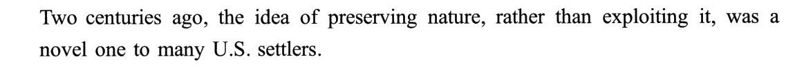
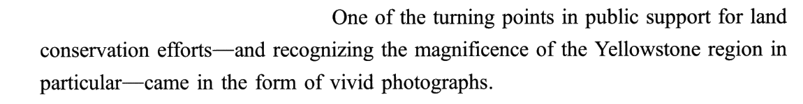
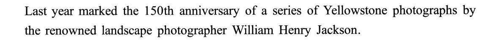
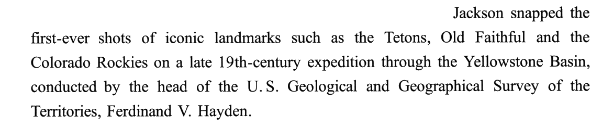
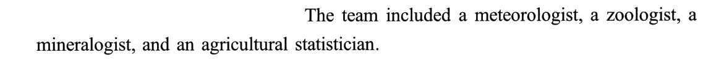
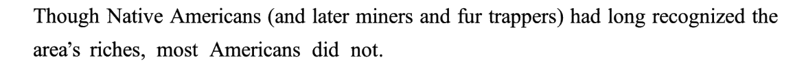
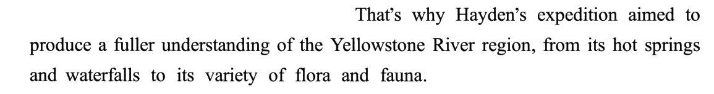
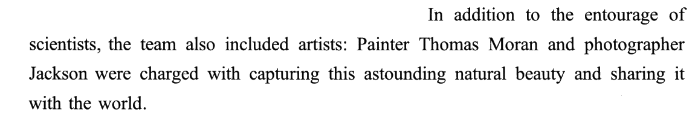
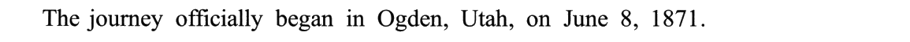
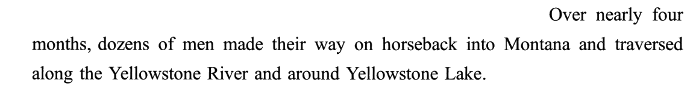
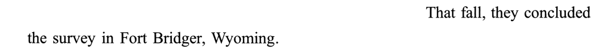
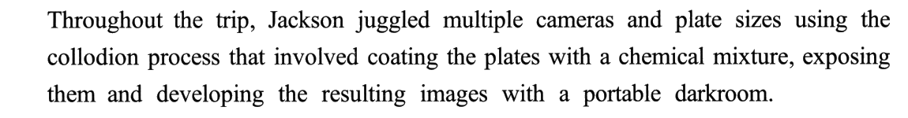
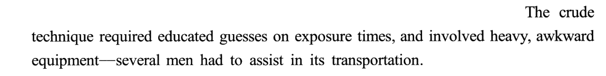
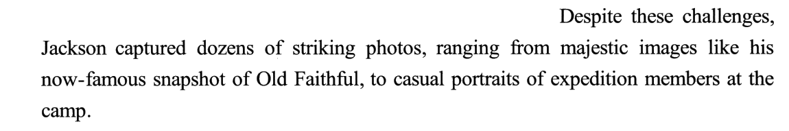
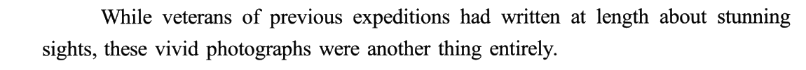
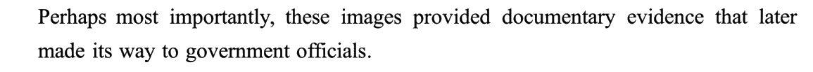
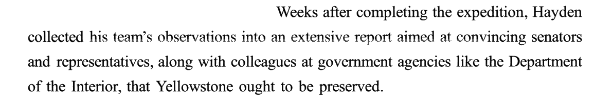
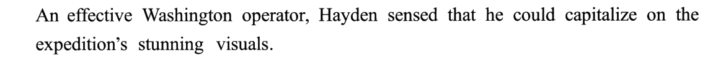
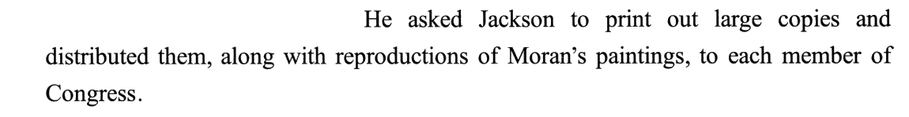
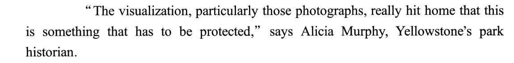
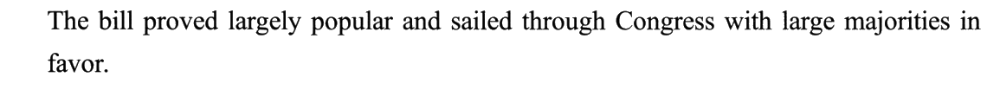
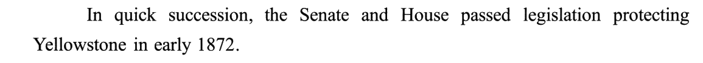
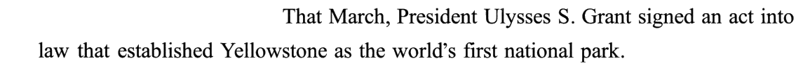
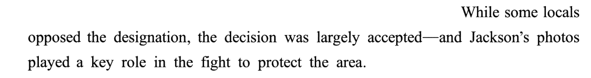
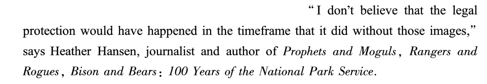
04分诊：如果你错了，错在哪一刀
| 错法 | 你当时大概是怎么想的 | 漏掉的那一刀 |
|---|---|---|
| 41 选 C | 「精明的华盛顿操盘手海登」像人物特写的开头 | 称呼链：首次出场要全名，全名在 A（R231） |
| 41 选 F | Though 让步开头、讲「多数美国人不知道」，像引子 | 定冠词：the area’s 要上家先交代地方（R79） |
| 42 选 D | A 讲考察、D 也讲考察和杰克逊，话题连得上 | 时间：D 是「旅途中」，人还没出发（E 才出发） |
| 43 选 C | H 讲照片的作用，C 也讲照片的作用，挨着放 | 递进方向：H 的 most importantly 要上家先给「次重要」；C 是在 H 之后展开 H（R271） |
| 44 选 G | H 末是游说议员，G 首是议案通过国会，因果直接 | 零多余验收：G 放 44，C 只能当末段，全文停在「照片发出去了」——首段的「转折点」收不回来（R107） |
⟹ 本篇五个空，每个空的错法都对应一把以前用过的刀（R79 首段 · R231 称呼 · R271 比较基准 · R107 零多余验收），没有新刀——2023 这一篇是排序题的「综合复习卷」：七篇里的工具，叙事文能用上的这篇全用上了。本篇不加新套路卡。
05长难句精析（10 句 · 本篇黄皮书无此栏目，全部原创）
本篇句子长在三处：后置修饰一层套一层（A ②、D ①）、破折号插入把主语和谓语隔开（B ②）、convince sb that 中间夹着 along with（H ②）。原句由浏览器识别成文字，分析里只引短语。
06可搬进作文的素材（本篇是「环境保护 / 图像与传播 / 证据与说服」三个话题的弹药库）
例句全部自拟，只借原文的句式骨架。
🔁 跨篇联动：同卷 Text 4 讲「论文被引次数被人做了手脚」——证据可以被操纵；本篇讲「照片成了说服国会的证据」——证据可以推动立法。写「信息与真相」类作文时，两篇正好是一正一反：好证据能改变决策，所以证据本身更需要被守护。
07词汇复盘（点卡片看详情 · 共 张，含 37 处熟词僻义）
本篇熟词僻义的共同规律：换了场景，熟词全换了意思——摄影场景里 plate 是「底片」、coat 是「涂」、expose 是「曝光」、develop 是「冲洗」；议会场景里 bill 是「议案」、House 是「众议院」、representative 是「众议员」、sail through 是「顺利通过」；人物描写里 operator 是「有手腕的人」、veteran 是「老队员」。最危险的是 D ①：一句话里四个摄影义熟词，按熟义读就成了「杂耍盘子、穿外套、暴露、发展」。